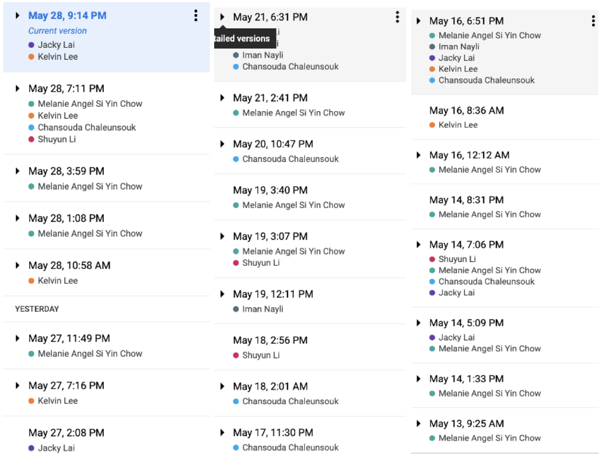

Tools and Technologies
Q: What software or other tools are required by the project?
A: GB Studio v2.0.0 Beta 4, Aseprite, GitHub, C++, Visual Studio Code, Tiled
Q: Are there any software licenses needed?
A: No, other than Aseprite which was $20USD
Q: Is there any hardware needed?
A: Various types of mobile phones of varying sizes and brands for testing
A: Group members had no experience with the tools and technologies listed above.
Audit Trail: Since GB studio cannot be implemented on GitHub, our GitHub insights cannot fully represent our working logistics. With the difficulty of working on the same prototype file, we have divided up all the work where everyone is responsible for their own parts. Details of our individual tasks will be covered in the section’s roles and timeframe. Apart from making the game prototype, everyone has contributed to the report document using Google Documents, screenshots of edit history are provided.
Testing
Alpha-Beta Testing will be implemented for testing our prototype. Major features including: 1) AI enemies, 2) combat system, 3) player control and 4) shooting functions will be tested by all of us through first step debugging and playing. During this pre-alpha stage, we can remodel our structures of the game if there are major issues or mistakes. When the coding is done, we allow all developers to play the game in order to point out all the issues, and to allow for further suggestions to improve the overall playability with the game. Seeing as the group we have is quite varied in their experience with video games, we would also be able to include input from users who aren’t as experienced as our other members, allowing for a more pleasing experience for all.
After some time in the alpha stage of game creation and completing a sizable chunk of the game we would release the alpha version for testing. With the game being tested by a larger audience of users we would be able to fix more bugs and potential issues and errors. After the alpha fixes and adjustments and with more content added, it would be time to publish the Beta version of the game to the market. During this testing, all implementations of codes, music, graphics, functions, and user data can be tested to see if there are any tiny bugs we may have missed during our processes of developing. Once there are no major issues that could potentially affect the players’ gaming experiences, it is time to publish our actual product, meaning we have completed the developing stages and testing. However, bugs always exist in areas we may not have noticed, so it is very important to keep track of the user data and feedback , if there’s any, in order to better improve the game and our users’ experiences.
>>>CLICK HERE FOR GAME PROTOTYPE<<<
Game Control (PC/laptop):